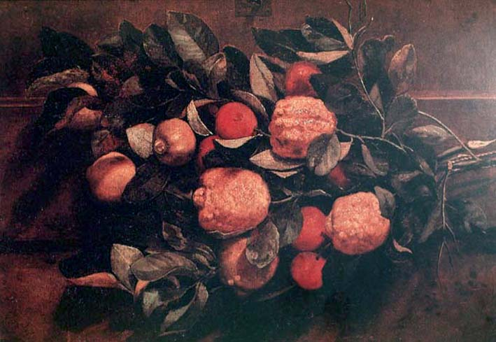

|
|  |
|
Estévão Silva, Natureza morta
|
'Nature' may have been, in pre-Republican iconography, a means of keeping 'the people' out of the picture, but it may also, as Lilia Moritz Schwarcz argues in her authoritative study of the iconography of the Brazilian Empire, have been more permeable and performative than post-1889 images of the nation. Afro-Brazilian cultures appropriated the monarchy's peculiar blend of medievalism and tropicalismo in its own celebrations and rituals. At least one black painter, Estévão Silva, excelled on the level of official culture, effectively gaining a chair at the Imperial Academy of Arts. His specialism was that most humble and decorative, yet subtle and complex genre, the natureza morta, or still life. Arguably, his are the paintings that connect the early art of the European travellers with the modernists' attempts to combine local tradition with formal experimentation: a body of work that literally 'holds still', saturated with meaning at the crossroads of times.
|